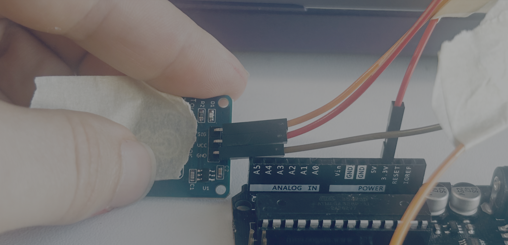
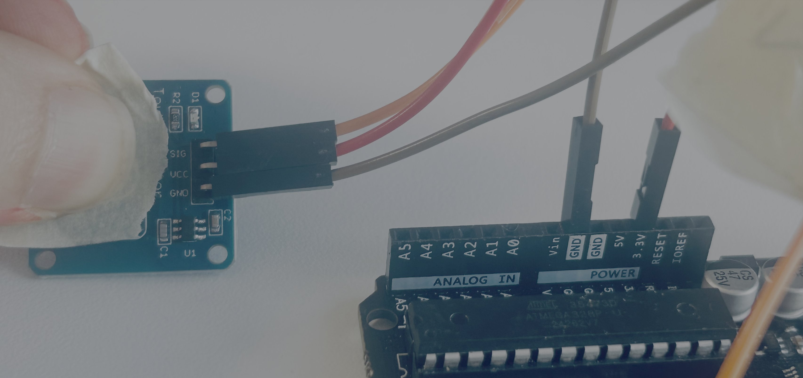

Flappy Bird
In this lesson you will build a flappy bird game controller with a Arduino and a touch sensor.
What you will learn
- How to use a touch sensor
- How to send message to a computer from the Arduino
- How to use an if block
Bill of Materials

- 1 x Arduino with cable
- 1 x Touch Sensor
- 3 x wires
Slides
Build Steps
1. Connect a jumper wire from the SIG pin of the touch sensor to pin 7 of the Arduno.

2. Connect a jumper wire from vcc of the touch sensor to the 3.3v pin of the Arduino

3. Connect a jumper wire from gnd of the touch sensor to a gnd pin on the Arduino

Coding Demo
Flow the video to code and to upload the code.
Flappy Bird Game Connection Demo
Challenge (Make the game playable)
Find this section of the code and play with the variables.
const G = 0.45; // gravity
const JUMP_V = -3.8; // jump velocity
const PIPE_GAP = 150; // vertical gap size
const PIPE_W = 60; // pipe width
const PIPE_SPACING = 220;// distance between pipes
const SCROLL = 2.4; // world scroll speed